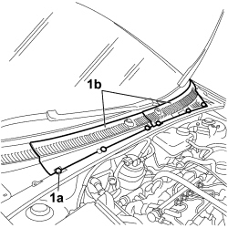
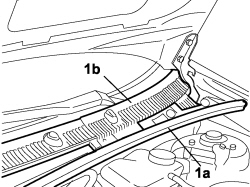
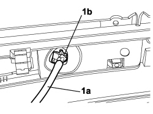
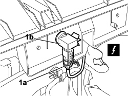
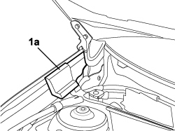

7210E22 R.R. WINDSCREEN BASE TRIM
- Path
- Procedures > 72 PANELS AND FRAMES > 7210 REMOVING-REFITTING > 7210E EXTERNAL PARTS > 7210E22 R.R. WINDSCREEN BASE TRIM
- Kind
- repair procedure (removal / refitting; the operation number is the code)
- Applies to
- all engines; all production periods
- Interactive page
- https://sloeber94.github.io/elrnDB-fCrm/en/#/194001243
Applies to: all engines; all production periods
 Removing
Removing
 Refitting
Refitting- Turn the ignition key to the OFF position.
- Open the bonnet.
- Disconnect the negative battery terminal.
Description | Connector | |
|---|---|---|
BATTERY |
1. Using the special tool, release the fixing buttons (1a) and remove the covers (1b) for the windscreen base trim.

Applies to: all engines; all production periods
- Working on both the left and right sides, carry out:
1. Remove the seal (1a), undo the fixing bolts and detach the windscreen base trim (1b).

Applies to: all engines; all production periods
1. Rotate the windscreen base trim and disconnect the screen washer fluid pipes (1a) from the jet (1b).

Applies to: all engines; all production periods
1. Disconnect the electrical connection (1a) from the air pollution sensor (1b) and remove the trim.
Description | Connector | |
|---|---|---|
1a | EXHAUST GAS SENSOR |

Applies to: all engines; all production periods
If necessary, working on both the left and right sides, carry out:
Op. 5050B10 FRONT WINDSCREEN WASHER JETS - R+R CLEAN AND/OR POSITION
1. Remove the sound insulation foam (1a) on both sides of the vehicle.

Applies to: all engines; all production periods
Refitting
Removing- Check that the trim is not damaged.
- Position the sound insulation foam on both sides of the vehicle.
- If removed, carry out on both sides:
Op. 5050B10 FRONT WINDSCREEN WASHER JETS - R+R CLEAN AND/OR POSITION
- Position the trim at the base of the windscreen.
- Connect the connector for the pollution control sensor and the screen washer fluid pipes.
Description | Connector | |
|---|---|---|
EXHAUST GAS SENSOR |
- Tighten the bolts fixing the windscreen base trim to the vehicle.
- Place the seal in position.
- Working on both the left and right sides, carry out:
- Position the covers and secure them to the windscreen base trim.
- Connect the negative battery terminal.
Description | Connector | |
|---|---|---|
BATTERY |
Topics linked from this page (3)
- 5050B10 FRONT WINDSCREEN WASHER JETS - R+R CLEAN AND/OR POSITION
- A001 BATTERY
- K064 EXHAUST GAS PRESENCE SENSOR
Topics that link to this page (15)
- 5010B12 CLIMATE CONTROL UNIT AIR INTAKE DUCT - R.R.
- 5010D72 AIR QUALITY SENSOR - R.R. FOLLOWING ELECTRICAL CIRCUIT CHECK
- 5040A57 EVAPORATOR INLET PIPE - R.R.
- 5040A78 TANDEM SUPPLY AND RETURN PIPE TO THE EVAPORATOR - R.R.
- 5040B30 EXPANSION VALVE (TUBE ORIFICE) - R+R
- 5040C12 AIR CONDITIONING CASING - R.R. WITH DASHBOARD REMOVED
- 5040D80 AIR CONDITIONER SYSTEM WIRING BUNDLE - R R OR REPLACE
- 5050B10 FRONT WINDSCREEN WASHER JETS - R+R CLEAN AND/OR POSITION
- 5050B38 WINDSCREEN WIPER ASSEMBLY - R+R OR REPAIR
- 5505C26 BONNET WIRING - R.R.
- 7025A10 BONNET LID - ALIGNMENT
- 7025A18 L/H OR R/H BONNET LID HINGE (ONE) - R+R WITH LID REMOVED
- 7025A28 BONNET LID OPENING CABLE - R R
- 7035A18 WINDSCREEN GLASS - R.R INCLUDING CLEANING HOUSING
- 7035A54 WINDSCREEN BASE LOWER SUPPORT (ONE), LEFT OR RIGHT FOR WINDSCREEN PROTECTIVE GRILLE ATTACHMENT - R.R.